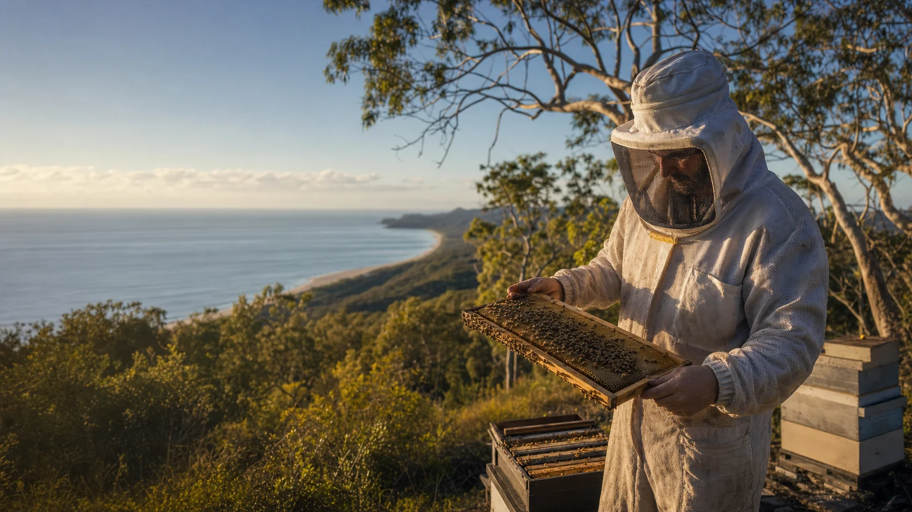

What is already happening?
Where are mites, beetles, weak colonies, slime-outs or re-infestation worries being noticed, and what level of detail would help the group learn together?

A public working map for bee people, neighbours and partners asking how Minjerribah / Straddie could strengthen hives, share observations at the level people choose, build a locally led lab and invite science in without handing the steering wheel away.
Gateway
Each page holds one part of the idea space. The aim is not to force one answer. It is to give everyday beekeepers and allies a safe hedged area for testing questions, finding partners and spotting the next practical move.
What are local beekeepers already observing, and how could a beekeeper-led hive-health census begin?
Begin with the people already acting 02Could a new lab add capacity on Straddie after a digital twin tests locations, access, neighbours and service needs?
Build the twin first 03How do we report, contain and clean up risk while keeping the tone calm, practical and self-sovereign?
Keep the edges careful 04Which questions deserve lab screens, bee-safety gates, legal permits and field trials before anyone gets excited?
Test before telling 05Who can help, what could they bring, and how can support avoid turning into extraction?
Shape the partner pack 06Could a lab become a field school, then explore registered provider pathways without pretending to be a university now?
Grow in the right order 07What source notes, official pages and freshness checks sit behind the first public framing?
Show the receipts 08What would make beekeepers more capable, scientists useful, and community trust stronger at the same time?
Hold the centreWorking posture
The source material points to a practical correction: local beekeepers are not waiting around for mainland experts. They are already observing, testing, worrying, helping and making decisions. The lab idea can begin there.
The public voice can stay firm on safety and careful on claims. When the law has a hard edge, link to the authority. When the science is early, ask better questions. When local knowledge is shared, treat it as a contribution offered with consent, context and reciprocity.
Where are mites, beetles, weak colonies, slime-outs or re-infestation worries being noticed, and what level of detail would help the group learn together?
Which samples, hive gear, soil, plant material or colonies need official advice before they travel between yards, suburbs, the island or the mainland?
How do beekeepers, neighbours, Traditional Custodians, researchers, councils and biosecurity people sit together without assuming any one group is automatically in charge?
First useful moves
The first version does not need to be a grand institution. It can begin with local convening, evidence handling, chosen sharing levels, basic equipment, official reporting support and a partner pack that makes the next meeting concrete.
Ask what is being seen, what is already working, what people want to share now, and what support would make a difference.
Use sample IDs, photos, dates, hive codes, chosen sharing levels and official reporting pathways before anyone publishes maps or makes claims.
Ask local beekeepers, neighbours, Traditional Custodians, universities, Biosecurity Queensland, QBA, council and funders what specific help they can offer into a co-op stewardship model.